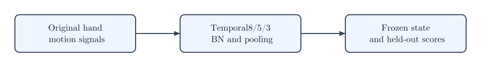
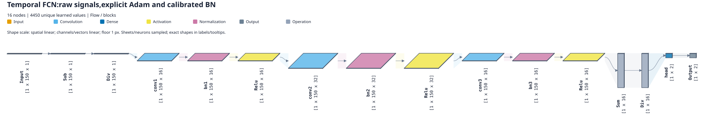
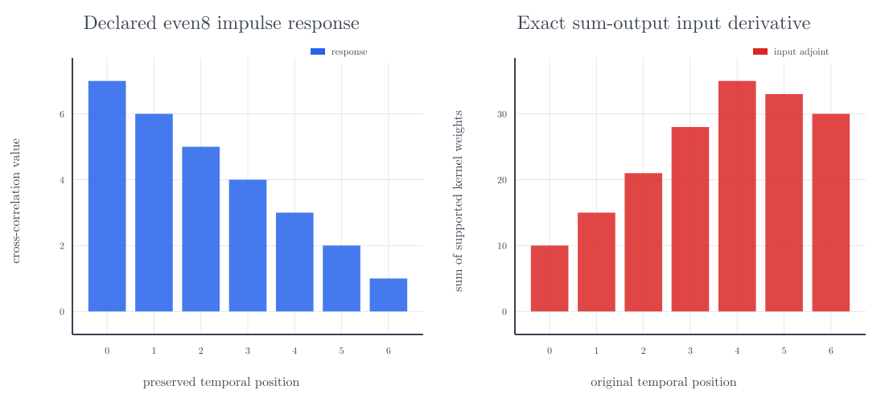
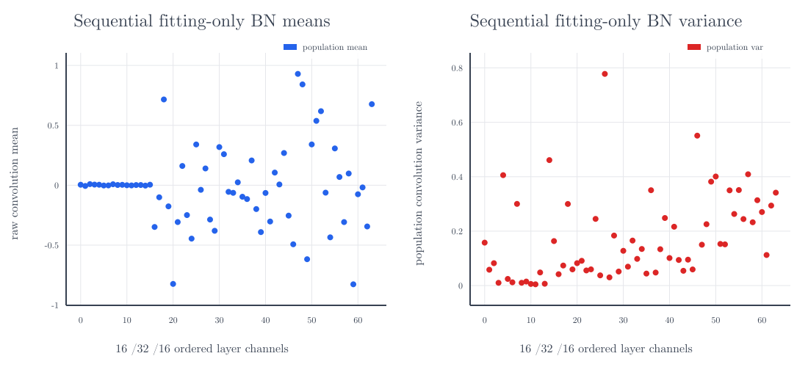
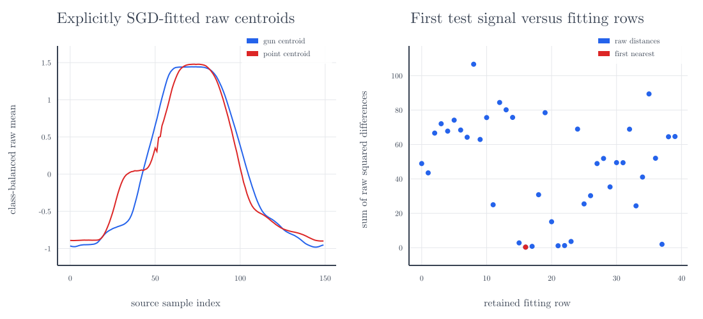
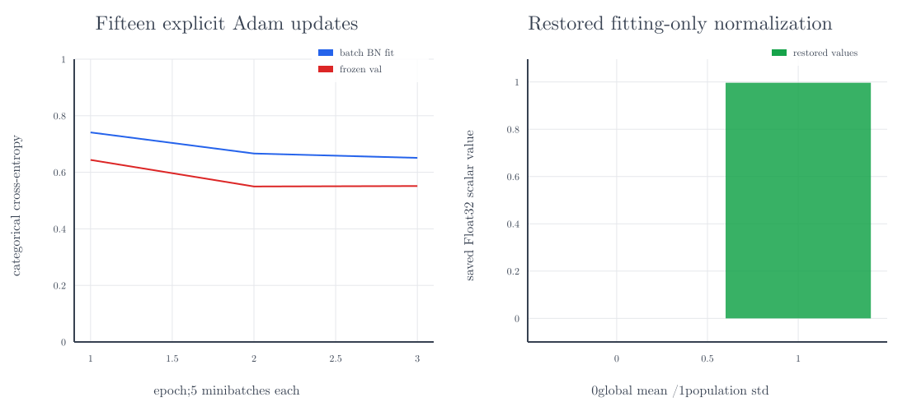
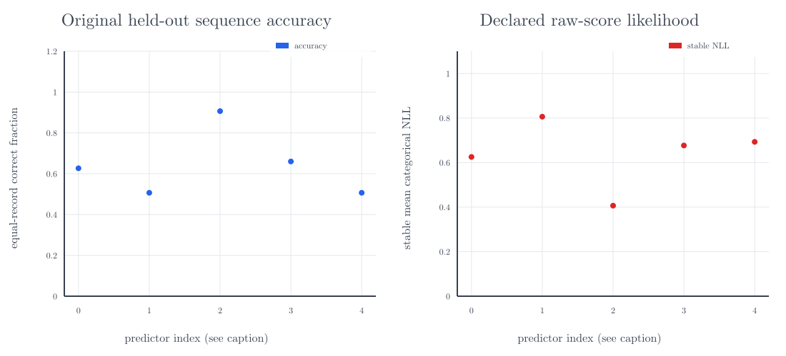
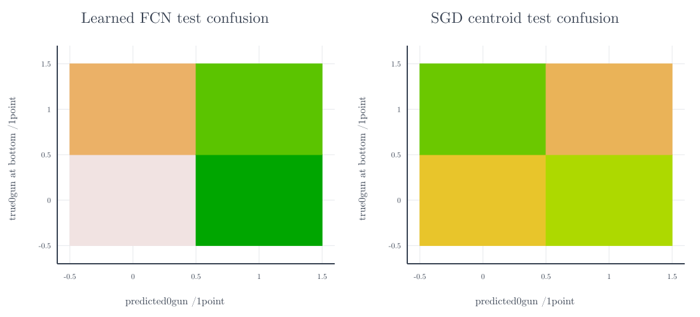
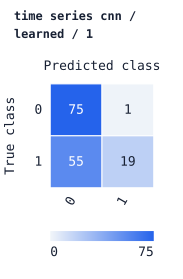

Temporal FCN:raw signals,explicit Adam and calibrated BN
Abstract
Three temporal8/5/3 convolution blocks classify genuine GunPoint hand motions. Tensor-only preprocessing,an explicit SGD centroid reference,all Adam updates and paired learned/BN/normalization restoration expose the distinction between minibatch training and calibrated frozen inference.
Source example: examples/cpp/source/nn/1_convolutional_neural_networks/1.9_1d_convolutions/time_series_cnn.cpp.
The method
Retain the original official test records,compute fitting-only population normalization,and train a complete temporal FCN with hard-label CE. Calibrate BN sequentially on fitting observations after each epoch;validation selects the paired learned/state checkpoint. Compare raw1NN and explicitly SGD-fitted centroid fields using tensor metrics and original source signal plots.
The concept diagram below is drawn by dm::graphics::Diagram. Its editable C++
source is the complete block below; regeneration uses the same datamunge toolchain
as the numerical examples. Exports consume the saved local SVG.
#include <dm/dm.hpp>
int main() {
std::filesystem::create_directories("build");
dm::graphics::Diagram diagram;
diagram.node("n0", {0.0, 0}, "Original hand\n motion signals");
diagram.node("n1", {5.2, 0}, "Temporal8/5/3\n BN and pooling");
diagram.node("n2", {10.4, 0}, "Frozen state\n and held-out scores");
diagram.edge("n0", "n1").edge("n1", "n2");
diagram.save_svg("build/time_series_cnn_concept.svg");
}
Executed tensor architecture
This figure executes the inference configuration shown in the code, using a zero-valued shape probe without fitting or loading a checkpoint. Named stage boundaries group whole subgraphs where available; other nodes retain functional-layer detail. Exact batch-inclusive shapes and reachable parameter totals come from the trace. Shared linear scales map spatial dimensions and channel counts to blocks; the one-pixel visibility floor is disclosed in the legend. Labels use compact monospace text, rotate counterclockwise and sit beside their own glyphs. Arrows flow left to right; wide diagrams scroll at native size on the website.
#include <dm/dm.hpp>
int main() {
namespace n = dm::nn;
namespace m = n::models;
n::set_num_threads(2);
std::filesystem::create_directories("build");
n::ParameterStore p(419), state(421);
n::ParameterStore deployed(419), frozen(421);
n::Module architecture_model(
[&](const n::Tensor& image) {
return m::SeriesCnn(deployed, frozen, image, m::SeriesConfig{16, 0, 1}).logits;
},
"Temporal FCN:raw signals,explicit Adam and calibrated BN");
n::ModelPlotOptions options;
options.style = n::ModelPlotStyle::Flow;
options.detail = n::ModelPlotDetail::Blocks;
options.labels = {.type = n::ModelPlotLabel::NameAndShape, .size = 12, .wrap = 24};
options.spacing = {.layer = 24, .lane = 12, .label = 8, .margin = 20};
options.sizing.spatial_size = 96;
options.sizing.channel_size = 42;
options.sizing.minimum_extent = 1;
options.opacity = .8;
const auto diagram = architecture_model.plot(n::zeros({1, 150, 1}), options);
diagram.save_svg("build/time_series_cnn_architecture.svg");
std::print(
"{} displayed nodes; {} reachable learned values.\n",
diagram.nodes().size(),
diagram.parameter_count());
}16 displayed nodes; 4450 reachable learned values.

Original hand-motion signals and fitting-only normalization
GunPoint tracks the right hand's x-coordinate for two actors performing gun-draw or pointing motions. Original class1 means gun-draw,class2 means pointing; prepared metadata maps them to0/1. Each record has150 source samples. Retain all150 official test rows unchanged. Seed407 shuffles each official training class,holds out20% for validation,then shuffles the retained rows:40fit,10val. Source-record IDs are disjoint;this is *not actor-disjoint* evaluation.
The official435,433-byte archive is pinned by SHA256 in the saved manifest. Raw numeric strings become Float32 tensors once,with no synthesized signals or per-record feature processing. Fitting Double population mean/std round once to Float32 and become detached scalar checkpoint state. Held-out values never estimate this normalization. All200 original signals are shown below.
#include <dm/dm.hpp>
int main() {
const std::filesystem::path cache = dm::datasets::data_home();
dm::datasets::prepare_example_data("signals", cache);
}#include <dm/dm.hpp>
int main() {
namespace n = dm::nn;
namespace m = n::models;
n::set_num_threads(2);
std::filesystem::path cache;
if (const auto *p = std::getenv("DATAMUNGE_DATA_DIR"))
cache = p;
else if (const auto *p = std::getenv("XDG_CACHE_HOME"))
cache = std::filesystem::path(p) / "datamunge/datasets";
else
cache = std::filesystem::path(std::getenv("HOME")) / ".cache/datamunge/datasets";
std::filesystem::path root = cache / "time_series";
if (const auto *p = std::getenv("DATAMUNGE_SERIES_DIR"))
root = p;
else {
dm::datasets::prepare_example_data("signals", cache.string());
root = cache / "time_series";
}
const auto split = m::LoadSeries(root);
const auto &fit = split.pools[0];
const auto &validation = split.pools[1];
const auto &test = split.pools[2];
std::print("| split | original records | gun-draw | pointing |\n|---|---:|---:|---:|\n");
for (const auto &item : std::vector<std::pair<std::string, m::SeriesData>>{
{"fitting", fit}, {"validation", validation}, {"test", test}}) {
const auto counts = n::sum(n::one_hot(item.second.labels, 2), {0}).to_vector<int>();
std::print("| {} | {} | {} | {} |\n", item.first, item.second.size(), counts[0],
counts[1]);
}
std::print("Fitting-only population mean {:.9f},std {:.9f};no per-test normalization.\n",
split.config.mean, split.config.standard_deviation);
auto a = dm::graphics::RPlot::create();
const auto labels = fit.labels.to_vector<int>();
int shown[2] = {0, 0};
const auto time = n::arange(0, 150).to_vector<double>();
for (int row = 0; row < fit.size(); ++row) {
const int c = labels[row];
if (shown[c] >= 2)
continue;
const auto values = n::select(fit.signals, 0, row).reshape({150});
a.lines(time, values.to_vector<double>(),
std::string(c ? "point " : "gun ") + std::to_string(++shown[c]),
c ? dm::graphics::RGB{220, 38, 38} : dm::graphics::RGB{37, 99, 235});
}
a.title("Four genuine fitting hand motions")
.x_label("source sample index")
.y_label("original released x-coordinate");
const auto all =
n::concat({fit.signals, validation.signals, test.signals}, 0).reshape({200, 150});
auto b = n::plot_tensor_map(n::reverse(all, {0}), n::min(all).item(), n::max(all).item());
b.title("All200 original source sequences")
.x_label("source sample index")
.y_label("40fit /10validation /150test rows");
auto layout = dm::graphics::RLayout::create(1, 2);
layout.add(a).add(b).size(1100, 500).fit_panels().save_svg("build/time_series_cnn_data.svg");
}| split | original records | gun-draw | pointing |
|---|---|---|---|
| fitting | 40 | 19 | 21 |
| validation | 10 | 5 | 5 |
| test | 150 | 76 | 74 |
Fitting-only population mean -0.000000000,std 0.996661067;no per-test normalization.

Even-kernel SAME padding has a visible phase
The first kernel has width8. SAME,stride1,pads3 values on the left and4 on the right,then performs cross-correlation. Kernels5 and3 pad symmetrically. All three blocks preserve the150-sample time axis. The declared impulse fixture displays the exact width8 response and its input adjoint;these are not trained features or real observations.
#include <dm/dm.hpp>
int main() {
namespace n = dm::nn;
const auto impulse =
n::one_hot(n::full({1}, 3., n::DType::Int64), 7).reshape({1, 7, 1}).requires_grad_();
const auto kernel = n::arange(1, 9).reshape({8, 1, 1});
const auto y = n::conv1d(impulse, kernel);
const auto g = n::grad(n::sum(y), {impulse})[0];
std::print("Width8 SAME:3left/4right pads,impulse response {},input adjoint {}.\n",
y.reshape({7}), g.reshape({7}));
const auto positions = n::arange(0, 7).to_vector<double>();
auto a = dm::graphics::RPlot::create(), b = dm::graphics::RPlot::create();
a.bars(positions, y.reshape({7}).to_vector<double>(), "response", {37, 99, 235})
.title("Declared even8 impulse response")
.x_label("preserved temporal position")
.y_label("cross-correlation value");
b.bars(positions, g.reshape({7}).to_vector<double>(), "input adjoint", {220, 38, 38})
.title("Exact sum-output input derivative")
.x_label("original temporal position")
.y_label("sum of supported kernel weights");
auto layout = dm::graphics::RLayout::create(1, 2);
layout.add(a).add(b).size(1100, 500).fit_panels().save_svg(
"build/time_series_cnn_padding.svg");
}Width8 SAME:3left/4right pads,impulse response float32[7] [7, 6, 5, 4, 3, 2, 1] (grad_fn=Reshape),input adjoint float32[7] [10, 15, 21, 28, 35, 33, 30].

BN calibration is a fitting-data operation
Training uses minibatch statistics and updates moving moments with momentum.99 and epsilon.001. After each epoch,an explicit fitting-only calibration pass sets each layer's population moments from all40 fitting sequences. The next layer receives the already calibrated previous layer. This is sequential calibration,not averaging minibatch variances. It uses no labels.
Frozen inference uses the saved global normalization and calibrated BN moments. No validation/test recalibration is allowed. A separate TrainNoUpdate policy uses batch statistics without mutating state for derivative probes. The following actual-data calibration leaves every learned value unchanged.
#include <dm/dm.hpp>
int main() {
namespace n = dm::nn;
namespace m = n::models;
n::set_num_threads(2);
std::filesystem::path cache;
if (const auto *p = std::getenv("DATAMUNGE_DATA_DIR"))
cache = p;
else if (const auto *p = std::getenv("XDG_CACHE_HOME"))
cache = std::filesystem::path(p) / "datamunge/datasets";
else
cache = std::filesystem::path(std::getenv("HOME")) / ".cache/datamunge/datasets";
std::filesystem::path root = cache / "time_series";
if (const auto *p = std::getenv("DATAMUNGE_SERIES_DIR"))
root = p;
else {
dm::datasets::prepare_example_data("signals", cache.string());
root = cache / "time_series";
}
const auto split = m::LoadSeries(root);
const auto &fit = split.pools[0];
const auto &validation = split.pools[1];
const auto &test = split.pools[2];
n::ParameterStore p(419), state(421);
std::vector<n::Tensor> before;
{
n::NoGradGuard guard;
m::SeriesCnn(p, state, fit.signals, split.config);
for (const auto &v : p.parameters())
before.push_back(v.clone());
m::SeriesCnn(p, state, fit.signals, split.config, m::BnMode::Calibrate);
}
bool unchanged = true;
for (std::size_t i = 0; i < before.size(); ++i)
unchanged = unchanged && n::all(n::equal(before[i], p.parameters()[i])).item<bool>();
std::vector<n::Tensor> means, variances;
for (int i = 1; i <= 3; ++i) {
means.push_back(state.at("bn" + std::to_string(i) + "/moving_mean"));
variances.push_back(state.at("bn" + std::to_string(i) + "/moving_var"));
}
std::print("Calibration:all{} learned leaves unchanged:{};{} state leaves include global "
"mean/std plus three BN mean/variance pairs.\n",
p.size(), unchanged, state.size());
const auto mean = n::concat(means, 0);
const auto variance = n::concat(variances, 0);
const auto positions = n::arange(0, mean.numel()).to_vector<double>();
auto a = dm::graphics::RPlot::create(), b = dm::graphics::RPlot::create();
a.points(positions, mean.to_vector<double>(), "population mean", {37, 99, 235})
.title("Sequential fitting-only BN means")
.x_label("16 /32 /16 ordered layer channels")
.y_label("raw convolution mean");
b.points(positions, variance.to_vector<double>(), "population var", {220, 38, 38})
.title("Sequential fitting-only BN variance")
.x_label("16 /32 /16 ordered layer channels")
.y_label("population convolution variance");
auto layout = dm::graphics::RLayout::create(1, 2);
layout.add(a).add(b).size(1100, 500).fit_panels().save_svg(
"build/time_series_cnn_calibration.svg");
}Calibration:all14 learned leaves unchanged:true;8 state leaves include global mean/std plus three BN mean/variance pairs.

Full and compact graphs retain the8/5/3 design
Each temporal convolution is followed by BN and ReLU. Global time averaging feeds a linear2-class head. Width128/256/128 gives264,962 learned scalars; compact16/32/16 gives4,450. Both have14 learned leaves and8 separate normalization/BN-state leaves. There is no dropout or feature engineering. The native suite executes full backward and checks all14 learned derivatives, plus independent host finite differences for all40 tiny-model coordinates. Pre-BN biases can have near-zero batch-statistic derivatives because a constant bias shift cancels in BN;finite zero gradients there are not a broken graph.
#include <dm/dm.hpp>
int main() {
namespace n = dm::nn;
namespace m = n::models;
n::set_num_threads(2);
n::NoGradGuard guard;
std::print("| graph | learned scalars | leaves | normalization/BN leaves | conv1 | conv2 | "
"conv3 | head |\n|---|---:|---:|---:|---|---|---|---|\n");
for (int width : {128, 16}) {
n::ParameterStore p(443), state(449);
const auto out =
m::SeriesCnn(p, state, n::ones({2, 150, 1}), m::SeriesConfig{width, 0, 1});
std::print("| {} | {} | {} | {} | {} | {} | {} | {} |\n",
width == 128 ? "full" : "compact", p.count(), p.size(), state.size(),
out.stages[0].shape(), out.stages[1].shape(), out.stages[2].shape(),
out.logits.shape());
}
}| graph | learned scalars | leaves | normalization/BN leaves | conv1 | conv2 | conv3 | head |
|---|---|---|---|---|---|---|---|
| full | 264962 | 14 | 8 | [2, 150, 128] | [2, 150, 256] | [2, 150, 128] | [2, 2] |
| compact | 4450 | 14 | 8 | [2, 150, 16] | [2, 150, 32] | [2, 150, 16] | [2, 2] |
Fit the centroid reference with visible tensor SGD
Fit two150-sample centroid fields by one Double SGD(.5) step on the summed per-coordinate class-balanced MSE. Each class divides by its own fitting count. Compare the resulting negative mean squared distances with the closed-form source helper as a parity oracle only. Save the fitted fields for evaluation after neural training. The1NN reference stores original fitting observations and has no optimized numeric leaves;its first fitting row wins equal-distance ties. Its onehot scores are pseudo-logits,so their CE is a declared diagnostic rather than calibrated likelihood.
#include <dm/dm.hpp>
int main() {
namespace n = dm::nn;
namespace m = n::models;
n::set_num_threads(2);
std::filesystem::path cache;
if (const auto *p = std::getenv("DATAMUNGE_DATA_DIR"))
cache = p;
else if (const auto *p = std::getenv("XDG_CACHE_HOME"))
cache = std::filesystem::path(p) / "datamunge/datasets";
else
cache = std::filesystem::path(std::getenv("HOME")) / ".cache/datamunge/datasets";
std::filesystem::path root = cache / "time_series";
if (const auto *p = std::getenv("DATAMUNGE_SERIES_DIR"))
root = p;
else {
dm::datasets::prepare_example_data("signals", cache.string());
root = cache / "time_series";
}
const auto split = m::LoadSeries(root);
const auto &fit = split.pools[0];
const auto &validation = split.pools[1];
const auto &test = split.pools[2];
const auto weights =
n::one_hot(fit.labels, 2, 1., 0., n::DType::Float64).reshape({fit.size(), 2, 1, 1});
const auto count = n::sum(weights, {0});
const auto target = n::expand_dims(fit.signals.to(n::DType::Float64), 1);
n::ParameterStore prior(431, n::DType::Float64);
const auto centers = prior.get("centroids", {2, 150, 1}, n::init::zeros());
n::OptimizerConfig options;
options.kind = n::OptimizerKind::Sgd;
n::Optimizer sgd(prior, .5, options);
const auto loss = n::sum(n::sum(weights * n::square(centers - target), {0}) / count);
sgd.minimize(loss);
const auto logits =
(-n::mean(n::square(n::expand_dims(test.signals.to(n::DType::Float64), 1) -
n::expand_dims(centers, 0)),
{2, 3}))
.to(n::DType::Float32);
const auto parity = n::max(n::abs(logits - m::SeriesReference(fit, test, true)));
if (parity.item() != 0)
return 1;
std::filesystem::create_directories("build");
n::save_npz("build/time_series_cnn_sgd_centroids.npz", {{"centers", centers.detach()}});
std::print("One explicit SGD(.5) update,{} centroid values;every held-out source-oracle "
"logit parity {:.3g}.\n",
prior.count(), parity.item());
auto a = dm::graphics::RPlot::create(), b = dm::graphics::RPlot::create();
const auto time = n::arange(0, 150).to_vector<double>();
a.lines(time, n::select(centers, 0, 0).reshape({150}).to_vector<double>(), "gun centroid",
{37, 99, 235})
.lines(time, n::select(centers, 0, 1).reshape({150}).to_vector<double>(),
"point centroid", {220, 38, 38})
.title("Explicitly SGD-fitted raw centroids")
.x_label("source sample index")
.y_label("class-balanced raw mean");
const auto difference =
(fit.signals - n::slice_axis(test.signals, 0, 0, 1)).to(n::DType::Float64);
const auto distances = n::sum(n::square(difference), {1, 2});
const auto closest = n::argmin(distances).item<std::int64_t>();
b.points(n::arange(0, fit.size()).to_vector<double>(), distances.to_vector<double>(),
"raw distances", {37, 99, 235})
.points({double(closest)}, {n::select(distances, 0, closest).item()}, "first nearest",
{220, 38, 38})
.title("First test signal versus fitting rows")
.x_label("retained fitting row")
.y_label("sum of raw squared differences");
auto layout = dm::graphics::RLayout::create(1, 2);
layout.add(a).add(b).size(1100, 500).fit_panels().save_svg(
"build/time_series_cnn_references.svg");
}One explicit SGD(.5) update,300 centroid values;every held-out source-oracle logit parity 0.

Every Adam update and the selected calibration state are explicit
Warm all14 learned and8 state leaves before Adam(.001). Calibrate once on fitting inputs for the untrained reference. Each of15 updates uses8 fitting signals,training BN,hard-label CE,and explicit tensor gradients. After each epoch,calibrate on all40 fitting signals again before validation. Validation NLL alone selects the *paired* learned/normalization/BN checkpoint. Restore fresh stores with neutral normalization defaults;all actual saved normalization and BN values must come from the checkpoint.
Compare exact restored/repeated logits,single/batch agreement and immutable learned/state leaves. A time-reversed raw observed signal tests sensitivity to order without changing labels or fitting anything. Reversal sensitivity alone does not prove useful classification. Evaluate the saved SGD centroids, parameter-free1NN,untrained FCN and declared class0 majority tie rule on the same original held-out rows. All scored/confusion/plot values use tensors.
#include <dm/dm.hpp>
int main() {
namespace n = dm::nn;
namespace m = n::models;
n::set_num_threads(2);
std::filesystem::path cache;
if (const auto *p = std::getenv("DATAMUNGE_DATA_DIR"))
cache = p;
else if (const auto *p = std::getenv("XDG_CACHE_HOME"))
cache = std::filesystem::path(p) / "datamunge/datasets";
else
cache = std::filesystem::path(std::getenv("HOME")) / ".cache/datamunge/datasets";
std::filesystem::path root = cache / "time_series";
if (const auto *p = std::getenv("DATAMUNGE_SERIES_DIR"))
root = p;
else {
dm::datasets::prepare_example_data("signals", cache.string());
root = cache / "time_series";
}
const auto split = m::LoadSeries(root);
const auto &fit = split.pools[0];
const auto &validation = split.pools[1];
const auto &test = split.pools[2];
n::ParameterStore p(419), state(421);
const auto config = split.config;
{
n::NoGradGuard guard;
m::SeriesCnn(p, state, fit.signals, config, m::BnMode::Calibrate);
}
auto infer = [&](n::ParameterStore &learned, n::ParameterStore &moving,
const n::Tensor &raw) {
n::NoGradGuard guard;
return m::SeriesCnn(learned, moving, raw, config).logits;
};
const auto initial = m::ScoreSequenceClassifier(infer(p, state, fit.signals), fit.labels);
const auto untrained = infer(p, state, test.signals);
n::OptimizerConfig options;
options.kind = n::OptimizerKind::Adam;
n::Optimizer adam(p, .001, options);
n::BatchOrder order(fit.size(), 8, 431);
std::vector<n::Tensor> history;
double best = INFINITY;
int selected = 0, updates = 0;
std::print(
"| epoch | minibatch-BN fitting CE | calibrated validation NLL |\n|---:|---:|---:|\n");
for (int epoch = 1; epoch <= 3; ++epoch) {
order.begin_epoch();
auto average = n::zeros({}, n::DType::Float64);
for (;;) {
const auto rows = order.next();
if (rows.empty())
break;
const auto batch = m::SeriesRows(fit, rows);
const auto out = m::SeriesCnn(p, state, batch.signals, config, m::BnMode::Train);
const auto loss = m::SequenceCrossEntropy(out.logits, batch.labels);
average = average +
loss.detach().to(n::DType::Float64) * double(rows.size()) / double(fit.size());
adam.step(n::grad(loss, p.parameters()));
++updates;
}
n::NoGradGuard guard;
m::SeriesCnn(p, state, fit.signals, config, m::BnMode::Calibrate);
const auto val =
m::ScoreSequenceClassifier(infer(p, state, validation.signals), validation.labels).nll;
if (val.item() < best) {
best = val.item();
selected = epoch;
n::NamedTensors arrays;
for (std::size_t i = 0; i < p.size(); ++i)
arrays.push_back({"p/" + p.names()[i], p.parameters()[i]});
for (std::size_t i = 0; i < state.size(); ++i)
arrays.push_back({"s/" + state.names()[i], state.parameters()[i]});
n::save_npz("build/time_series_cnn_best.npz", arrays);
}
history.push_back(n::stack({average, val}, 0));
std::print("| {} | {:.6f} | {:.6f} |\n", epoch, average.item(), val.item());
}
n::ParameterStore deployed(419), frozen(421);
{
n::NoGradGuard guard;
m::SeriesCnn(deployed, frozen, n::zeros({1, 150, 1}), m::SeriesConfig{16, 0, 1});
}
const auto checkpoint = n::load_npz("build/time_series_cnn_best.npz");
if (checkpoint.size() != p.size() + state.size())
return 1;
for (const auto &[name, value] : checkpoint) {
if (name.starts_with("p/")) {
p.set(name.substr(2), value);
deployed.set(name.substr(2), value.clone());
} else if (name.starts_with("s/")) {
state.set(name.substr(2), value);
frozen.set(name.substr(2), value.clone());
} else
return 1;
}
std::vector<n::Tensor> before;
for (const auto &v : deployed.parameters())
before.push_back(v.clone());
for (const auto &v : frozen.parameters())
before.push_back(v.clone());
const auto logits = infer(deployed, frozen, test.signals);
const auto reference = infer(p, state, test.signals);
const auto repeat = infer(deployed, frozen, test.signals);
const auto parity =
n::maximum(n::max(n::abs(logits - reference)), n::max(n::abs(logits - repeat)));
const auto first = n::slice_axis(test.signals, 0, 0, 1);
const auto single = infer(deployed, frozen, first);
const auto batch_error = n::max(n::abs(single - n::slice_axis(logits, 0, 0, 1)));
const auto reversal =
n::sum(n::abs(single.to(n::DType::Float64) -
infer(deployed, frozen, n::reverse(first, {1})).to(n::DType::Float64)));
bool immutable = true;
std::size_t index = 0;
for (const auto *store : {&deployed, &frozen})
for (const auto &v : store->parameters())
immutable = immutable && n::all(n::equal(before[index++], v)).item<bool>();
if (parity.item() > 1e-6 || batch_error.item() > 1e-6 || !immutable ||
reversal.item() <= 1e-7)
return 1;
const auto fitted =
m::ScoreSequenceClassifier(infer(deployed, frozen, fit.signals), fit.labels);
std::print(
"{} explicit Adam updates;selected epoch {},validation {:.6f};fixed calibrated fitting "
"CE {:.6f}->{:.6f}.\nRaw-signal-only restore/repeat parity {:.3g};single/batch {:.9g} "
"within1e-6;{} learned+state leaves immutable:{};reversal logit change {:.9f}.\n",
updates, selected, best, initial.nll.item(), fitted.nll.item(), parity.item(),
batch_error.item(), before.size(), immutable, reversal.item());
const auto centers = n::load_npz("build/time_series_cnn_sgd_centroids.npz")[0].second;
const auto centroid =
(-n::mean(n::square(n::expand_dims(test.signals.to(n::DType::Float64), 1) -
n::expand_dims(centers, 0)),
{2, 3}))
.to(n::DType::Float32);
const auto nearest = m::SeriesReference(fit, test, false);
std::vector<n::Tensor> metrics, confusions;
std::print(
"| predictor | accuracy | stable NLL | true-row confusion |\n|---|---:|---:|---|\n");
{
n::ConfusionMatrix current_counts(logits.size(1));
current_counts.add(test.labels, n::argmax(logits, 1));
n::save_npz("build/time_series_cnn_heldout_"+std::string("0")+".npz",{{"truth",test.labels},{"logits",logits},{"counts",current_counts.to_tensor()}});
}
for (const auto &item :
std::vector<std::pair<std::string, n::Tensor>>{{"learned", logits},
{"untrained", untrained},
{"raw1NN", nearest},
{"SGD centroid", centroid},
{"class0 tie", n::zeros_like(logits)}}) {
const auto score = m::ScoreSequenceClassifier(item.second, test.labels);
std::print("| {} | {:.6f} | {:.6f} | {} |\n", item.first, score.accuracy.item(),
score.nll.item(), score.confusion);
metrics.push_back(n::stack({score.accuracy, score.nll}, 0));
confusions.push_back(score.confusion.to(n::DType::Float64));
}
const auto measured = n::stack(metrics, 0);
const auto xs = n::arange(0, 5).to_vector<double>();
auto a = dm::graphics::RPlot::create(), b = dm::graphics::RPlot::create();
a.points(xs, n::select(measured, 1, 0).to_vector<double>(), "accuracy", {37, 99, 235})
.title("Original held-out sequence accuracy")
.x_label("predictor index (see caption)")
.y_label("equal-record correct fraction")
.y_limits(0, 1.2);
b.points(xs, n::select(measured, 1, 1).to_vector<double>(), "stable NLL", {220, 38, 38})
.title("Declared raw-score likelihood")
.x_label("predictor index (see caption)")
.y_label("stable mean categorical NLL")
.y_limits(0, 1.1);
auto scores = dm::graphics::RLayout::create(1, 2);
scores.add(a).add(b).size(1100, 500).fit_panels().save_svg(
"build/time_series_cnn_metrics.svg");
std::filesystem::create_directories("figures");
std::filesystem::copy_file("build/time_series_cnn_metrics.svg",
"figures/time_series_cnn_metrics.svg",
std::filesystem::copy_options::overwrite_existing);
a = n::plot_tensor_map(n::reverse(confusions[0], {0}), 0, 80);
b = n::plot_tensor_map(n::reverse(confusions[3], {0}), 0, 80);
a.title("Learned FCN test confusion")
.x_label("predicted0gun /1point")
.y_label("true0gun at bottom /1point");
b.title("SGD centroid test confusion")
.x_label("predicted0gun /1point")
.y_label("true0gun at bottom /1point");
auto cm = dm::graphics::RLayout::create(1, 2);
cm.add(a).add(b).size(1100, 500).fit_panels().save_svg(
"build/time_series_cnn_confusion.svg");
std::filesystem::copy_file("build/time_series_cnn_confusion.svg",
"figures/time_series_cnn_confusion.svg",
std::filesystem::copy_options::overwrite_existing);
const auto hist = n::stack(history, 0);
const auto epochs = n::arange(1, 4).to_vector<double>();
a = dm::graphics::RPlot::create();
b = dm::graphics::RPlot::create();
a.lines(epochs, n::select(hist, 1, 0).to_vector<double>(), "batch BN fit", {37, 99, 235})
.lines(epochs, n::select(hist, 1, 1).to_vector<double>(), "frozen val", {220, 38, 38})
.title("Fifteen explicit Adam updates")
.x_label("epoch;5 minibatches each")
.y_label("categorical cross-entropy")
.y_limits(0, 1.);
const auto norm = n::concat({frozen.at("normalization/mean").reshape({1}),
frozen.at("normalization/std").reshape({1})},
0);
b.bars({0., 1.}, norm.to_vector<double>(), "restored values", {22, 163, 74})
.title("Restored fitting-only normalization")
.x_label("0global mean /1population std")
.y_label("saved Float32 scalar value");
auto curves = dm::graphics::RLayout::create(1, 2);
curves.add(a).add(b).size(1100, 500).fit_panels().save_svg(
"build/time_series_cnn_training.svg");
}| epoch | minibatch-BN fitting CE | calibrated validation NLL |
|---|---|---|
| 1 | 0.741011 | 0.643741 |
| 2 | 0.666389 | 0.549827 |
| 3 | 0.650981 | 0.551412 |
15 explicit Adam updates;selected epoch 2,validation 0.549827;fixed calibrated fitting CE 0.804196->0.632365. Raw-signal-only restore/repeat parity 0;single/batch 0 within1e-6;22 learned+state leaves immutable:true;reversal logit change 0.019842535.
| predictor | accuracy | stable NLL | true-row confusion |
|---|---|---|---|
| learned | 0.626667 | 0.625393 | int64[2, 2] [[75, 1], [55, 19]] |
| untrained | 0.506667 | 0.806120 | int64[2, 2] [[76, 0], [74, 0]] |
| raw1NN | 0.906667 | 0.406595 | int64[2, 2] [[67, 9], [5, 69]] |
| SGD centroid | 0.660000 | 0.676829 | int64[2, 2] [[45, 31], [20, 54]] |
| class0 tie | 0.506667 | 0.693147 | int64[2, 2] [[76, 0], [74, 0]] |



The selected epoch2 gives accuracy.626667 and NLL.625393 on all150 original test records. Raw1NN reaches.906667 and the SGD centroid.660000;the FCN does not outperform either reference. Its confusion75/1/55/19 shows many pointing records predicted as gun-draw. This is a short implementation check,not a useful improvement claim.
Annotated confusion counts
The following program replots the current held-out evaluation counts printed in the
predictor tables above. It reproduces those recorded measurements without refitting
or re-evaluating the model. ConfusionMatrix::from_counts owns the integer tensor
counts and save_svg labels every cell. True class zero is the *top* row and
predicted class zero the left column. Counts are exact; colors use the observed
count range. Source class meanings remain those declared for the dataset above.
#include <dm/dm.hpp>
int main() {
namespace n = dm::nn;
std::filesystem::create_directories("build");
{
n::Tensor counts;
for (const auto &[key, value] : n::load_npz("build/time_series_cnn_heldout_0.npz"))
if (key == "counts") counts = value;
const auto matrix = n::ConfusionMatrix::from_counts(counts);
matrix.save_svg(
"build/time_series_cnn_confusion_api_0.svg",
{.title = "time series cnn / learned / 1", .cell_size = 52, .font_size = 13});
std::print("Current evaluation 1: 150 observations; accuracy {:.6f}.\n", matrix.accuracy());
}
}Current evaluation 1: 150 observations; accuracy 0.626667.

Verification and scope
Six native tests verify the complete full graph and all learned derivatives, independent even8/odd5/3 SAME/BN/GAP equations and finite differences for all40 tiny learned coordinates,every original source sample/ID/label and fitting population statistic,sequential calibrated moments at all layers, frozen state/single-batch agreement,explicit SGD parity and every held-out categorical prediction/metric/confusion value. Public examples compile/run; all new headers include independently and the original workflow executes.
The tiny three-epoch fit is not a tuned GunPoint benchmark or actor-disjoint study. Original two-actor dependencies remain. Temporal reversal sensitivity shows changed computations,not reliable generalization. Actual held-out class counts and the unchanged raw-distance references govern the comparison.
Regenerate adjacent views from this run
#include <dm/dm.hpp>
int main(){std::filesystem::copy_file("build/time_series_cnn_confusion.svg","build/export_time_series_cnn_confusion.svg",std::filesystem::copy_options::overwrite_existing);}#include <dm/dm.hpp>
int main(){std::filesystem::copy_file("build/time_series_cnn_metrics.svg","build/export_time_series_cnn_metrics.svg",std::filesystem::copy_options::overwrite_existing);}Conclusion
The complete temporal graph,normalization state and every optimizer step are visible. Original signals and held-out class counts keep the short fit interpretable,while raw-distance references and explicit BN policies limit what its loss reduction can establish.
References
- [Wang,Yan and Oates(2017),Time Series Classification from Scratch with Deep Neural Networks:A Strong Baseline](https://arxiv.org/abs/1611.06455).
- [Official GunPoint observations and class meanings](https://www.timeseriesclassification.com/description.php?Dataset=GunPoint).